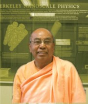

<div class="content container about-tds">
  <div class="page-wrapper">
    <header class="page-heading clearfix">
      <h1 class="heading-title pull-left">Founder Diector</h1>
    </header>

    <div class="page-content">
      <div class="section-content">
        <br>

        <p>
          Dr. Thoudam Damodara Singh (1937-2006), also known as His Holiness Bhaktisvarūpa Dāmodara Swami is the founding director of the Bhaktivedanta Institute. He was one of the world’s pioneer exponents of science-spirituality dialogue and inter-faith peace initiatives. He identified the cause of many of the problems in the world today such as terrorism, environmental issues, and social and religious conflict to be due to a lack of understanding between the fields of empirical science and religion. As the International Director of the Bhaktivedanta Institute, he wrote more than thirty books, gave hundreds of talks and seminars, and organized numerous scholarly discussions and international conferences on topics related to the science and spirituality nexus.
        </p>
        <p>
          His tireless efforts were revolutionary and brought together some of the best minds in the world -  Nobel Laureates, scientists, spiritualists, and world leaders - to a common platform of constructive dialogue  and action for a more peaceful world. While traveling extensively around the world, he built bridges between communities, cultures and ideologies. Everywhere he went, he sought to cultivate the human spirit of inquiry, love and peace.  Primarily, he emphasized the need for a new paradigm of life beyond the mechanistic model of atoms and molecules, to include that of consciousness, meaning and purpose.
        </p>
        <p>
          Dr. T. D. Singh was born in the ancient state of Manipur, which is situated in the hilly Northeast region of India.  After receiving a scholarship from the Indian government for his excellent academic results, he obtained his PhD in Physical Organic Chemistry, from the University of California, Irvine, USA in 1974.  He contributed many papers in the Journal of the American Chemical Society and the Journal of Organic Chemistry in the field of fast proton transfer kinetics in model biological systems using stopped-flow technique and NMR spectroscopy. He also worked on gas phase reaction mechanisms using Ion Cyclotron Resonance (ICR) spectroscopy.
        </p>
        <p>
          While in the USA, in 1970, he met his spiritual teacher, His Divine Grace A.C. Bhaktivedanta Swami Prabhupāda  who belonged to the  ancient  Vaiṣṇava Vedanta lineage.  Under his guidance,  Dr. T.D. Singh began advanced studies in the philosophy of Vedanta. In 1974, Śrīla Prabhupāda founded the Bhaktivedanta Institute and appointed Dr. T. D. Singh as Director. 
        </p>
        <p>
          Dr. Singh is renowned for his ability to synthesize two apparently different paradigms of epistemology in Western science and Eastern spirituality.  For example, he coined and defined the term ‘spiriton’ in reference to the conscious energy which exists in all living beings, and which has not been described by material sciences.
        </p>
        <p>
          In addition to  his contribution to science and spirituality, Dr. Singh was a key member of the United Religions Initiative (URI) founded by Bishop E. Swing under the auspices of the United Nations. Through the URI, Dr. Singh played a very active role in getting religious leaders from several parts of the globe to meet and work towards greater understanding of each other.  Referring to this work, he  jokingly used to say “I am performing the chemistry of culture.” Despite his stature as a world figure, Dr. Singh was personal and humble in his dealings with whomever he met. Dr. Singh’s life, works and teachings mark a new chapter in humanity’s quest for the Ultimate Reality by combining a scientific and spiritual approach.
        </p>
      </div>

      <section class="testimonials">
        <h1 class="section-heading text-highlight">
          <span class="line">Tributes</span>
        </h1>
        <div class="section-content">
          {% for tribute in site.data.td_tributes %}
            <blockquote class="quote">
              <p><i class="fa fa-quote-left"></i>{{tribute.quote}}</p>
            </blockquote>
            <span class="people">
              <span class="name">{{tribute.author}}</span>
              <br/>
              <span class="title">{{tribute.author_desc}}</span>
            </span>
          {% endfor %}
        </div>
      </section>
    </div>
  </div>
</div>
